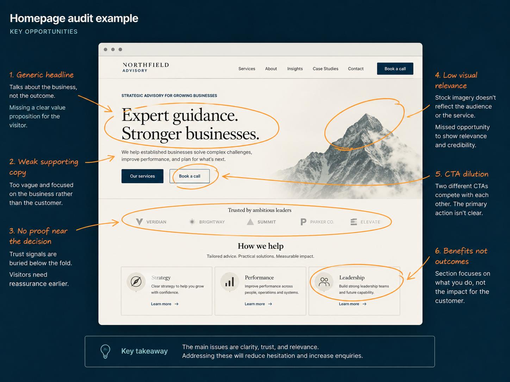
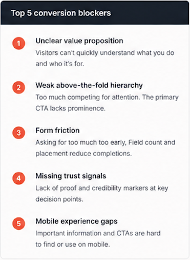
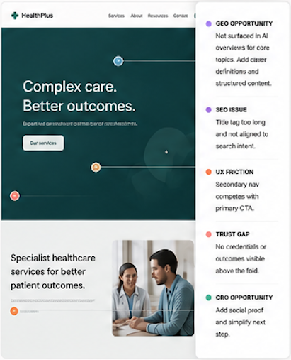
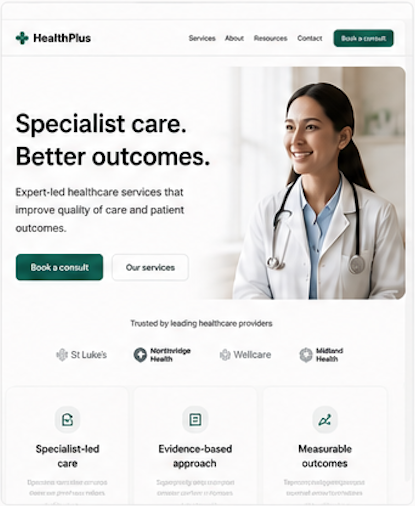

Most websites lose customers at moments of hesitation.
We identify where buyers lose confidence in your website, then fix the friction preventing them from taking action.

BUILT FOR
A system for turning more of your existing traffic into revenue, consistently.
Accelerate
Fix what's broken now. Rapid diagnostics and high-impact changes that drive immediate results.
not months.
Optimise
Improve performance across the full journey. Refine messaging, UX, and flows to increase conversions at every step.
Scale
Embed systems that drive compounding growth. Continuous optimisation loops, team alignment, and processes that scale without dependency.
compounding growth.
Most products don't have a traffic problem. They have a decision problem.
Users hesitate because key questions aren't answered.
Trust is built inconsistently or too late in the journey.
Critical information arrives too late — or is missing entirely.
It's rarely the offer.
It's the experience.
Across hundreds of high-intent websites, we see the same confidence gaps that quietly cost businesses leads, revenue, and growth.
Trust isn't built in one moment.
It's earned across dozens of small interactions. When any of them create doubt, visitors hesitate — and most won't come back.
Unclear what you do
Vague messaging or jargon makes it hard to understand the value.
Missing reasons to trust
Lack of proof, credibility signals, or customer validation creates doubt.
No clear next step
Too many choices or unclear CTAs leave visitors unsure what to do.
Too much friction
Long forms, unnecessary fields, or complex steps create drop-off.
Slow or clunky experience
Performance issues or poor mobile experience erode confidence instantly.
The time it takes to form a first impression.
MIT / Princeton ResearchOnly read your headline and first line of copy.
Nielsen Norman GroupLift in conversions from removing one form field.
UnbounceWe close these gaps. Systematically. Continuously. Built around how real buyers make decisions.
See our approachOur initial 7–10 day sprint.
We move fast to uncover what's holding your site back and implement high-impact changes that drive measurable improvements.
Top 5 issues stopping conversion
We identify the highest-impact friction points affecting trust, clarity, and conversion.
Full teardown of key pages incl. GEO & SEO recos
We audit your most important pages through the lens of trust, UX, CRO, GEO, and technical SEO.
High-impact design concepts
We design focused concepts that remove friction, clarify messaging, and guide users to take action.
Implemented and live
We implement, test, and refine so you see results—fast.



- Implemented improvements
- Quality assurance testing
- Performance and UX validation
- Tracking and measurement setup
- Recommendations for next steps
We fix what matters most first—so you see measurable improvements in days, not months.
15 years fixing the gap between traffic and revenue.
I'm Andy Braxton. Before starting High Trust Digital I spent over a decade leading UX and product design at some of the world's most conversion-focused consumer platforms — driving measurable improvements in trust, clarity, and conversion at serious scale.
I bring that same rigour — experimentation, behavioural insight, and relentless focus on what actually moves the needle — to businesses who deserve more from their website.
Increase in experimentation velocity at Hotels.com, compounding conversion gains year-over-year.
Digital booking rate growth through UX and journey optimisation at TELUS Health.
Conversion uplift on core mobile journeys through redesign and continuous testing.
Every engagement is led by me personally — not passed to a junior team.
Start with a focused engagement.
Perfect for smaller teams or a first step towards bigger change. Delivered in 7 business days.